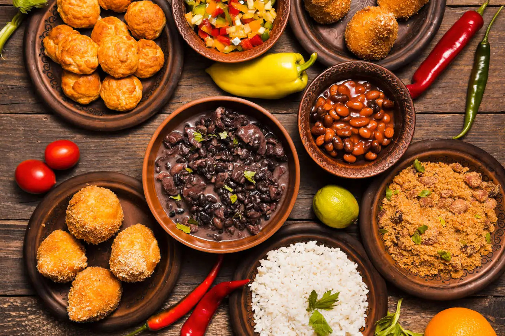

Quarta-feira, 17 de Dezembro de 2025 | Horário: 10:33
Novo Polo Gastronômico fortalece empreendedorismo na capital com culinária afro-brasileira
Pesquisa Datafolha mostra que 72% consideram que parque está melhor do que
há cinco anos, quando o Ibirapuera foi concedido à iniciativa privada; 95%
avaliam que está bem conservado.

Uma pesquisa realizada pelo Datafolha com frequentadores do Parque Ibirapuera revela o que o
paulistano acha de
seu parque favorito. E a avaliação é muito positiva. A nota média alcançada pelo parque é de
9,1, sendo que 50%
dos entrevistados deram nota 10. Segundo o levantamento, 72% dos entrevistados afirmam que o
local melhorou nos
últimos cinco anos, período que coincide com a mudança no modelo de gestão.
A avaliação positiva é acompanhada da percepção generalizada de que o parque melhorou nos últimos
cinco anos,
segundo 72% dos ouvidos pelo Datafolha. Esse período coincide com o da concessão do Ibirapuera à
iniciativa privada. Firmada em 2019, ela tem como objetivo modernizar a manutenção, ampliar
serviços e reduzir custos públicos de
gestão. Fatores que são percebidos pela população.
Por exemplo, 95% dos entrevistados dizem que o Ibirapuera está bem conservado, e 96% afirmam que
o parque
possui boa infraestrutura esportiva. A sensação de segurança também é elevada — 88% consideram o
local seguro, e
86% dizem se sentir mais protegidos ao saber que o parque é monitorado pelo Smart Sampa, o maior
programa de
videomonitoramento inteligente e integrado da América Latina, lançado pela Prefeitura de São
Paulo. Ele integra câmeras a uma central e dispara alertas em caso de alguma ocorrência.
O Datafolha realizou mil entrevistas no Ibirapuera nos dias 30 de novembro e 7 de dezembro com
pessoas com 16
anos ou mais. A margem de erro é de 3 pontos percentuais, para mais ou para menos.
Quase a totalidade dos ouvidos, 95%, aprova as obras recentes feitas no Ibirapuera, como a nova
pista de skate, a
quadra de tênis e o cachorródromo. Além disso, 87% aprovam o modelo de concessão por permitir
que a prefeitura
direcione recursos economizados para parques da periferia.
O levantamento também revela que o Ibirapuera se consolidou como espaço para atividades
gratuitas, com 68% dos
frequentadores participando de ações esportivas ou culturais oferecidas no parque. A caminhada
continua sendo a
prática mais comum (50%), e o número de visitantes é percebido como crescente por 73% dos
entrevistados.
Esse aumento no número de visitantes é explicado também pelo Domingão Tarifa Zero, criado pela
atual administração. Com ônibus gratuitos aos domingos, cresceu o número de pessoas que
frequentam o parque. E a pesquisa revela
que é exatamente o ônibus o meio de transporte escolhido por 53% dos frequentadores que vão ao
Ibirapuera. Entre
eles, 65% disseram que aumentaram o número de vezes que vão ao parque desde a implantação do
Domingão Tarifa
Zero.
MAIS PARQUES NA CIDADE
Enquanto a concessão reforça a manutenção de equipamentos consolidados como o Ibirapuera, a
prefeitura tem investido paralelamente na expansão de parques e áreas verdes na cidade. Hoje São
Paulo conta com 120 parques
públicos, número impulsionado pela atual administração, que inaugurou 12 novos parques com foco
especialmente
nas regiões periféricas.
Somente em 2024, foram inaugurados quatro parques municipais: Parque Linear Jardim São Francisco,
na Penha
(zona leste), Parque Linear Sarah (zona oeste), Parque Linear Córrego Itaquera (zona leste) e
Parque Princesa Isabel
(centro).
Em 2025, a prefeitura entregou à população o Núcleo Pabreu do Parque Municipal Jardim Prainha
(zona sul), o
Parque Linear Córrego do Bispo (na Casa Verde, zona norte), o Parque Jardim Apurá-Búfalos (em
Cidade Ademar,
zona sul), e o Morumbi Sul (em Campo Limpo, na zona sul).
Fonte: Site da Prefeitura de São Paulo, com dados da pesquisa Datafolha